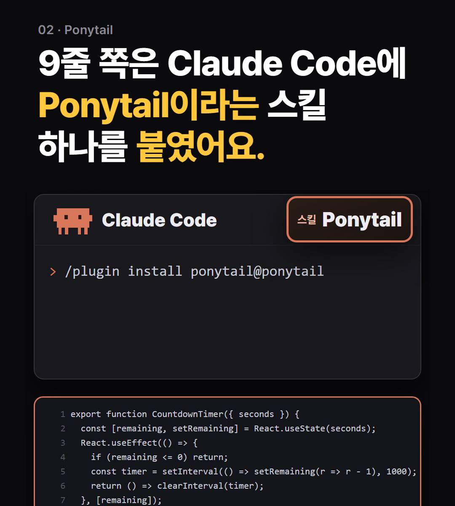
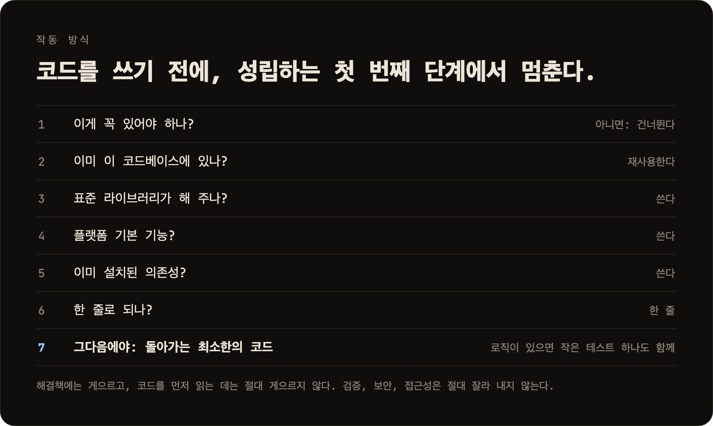
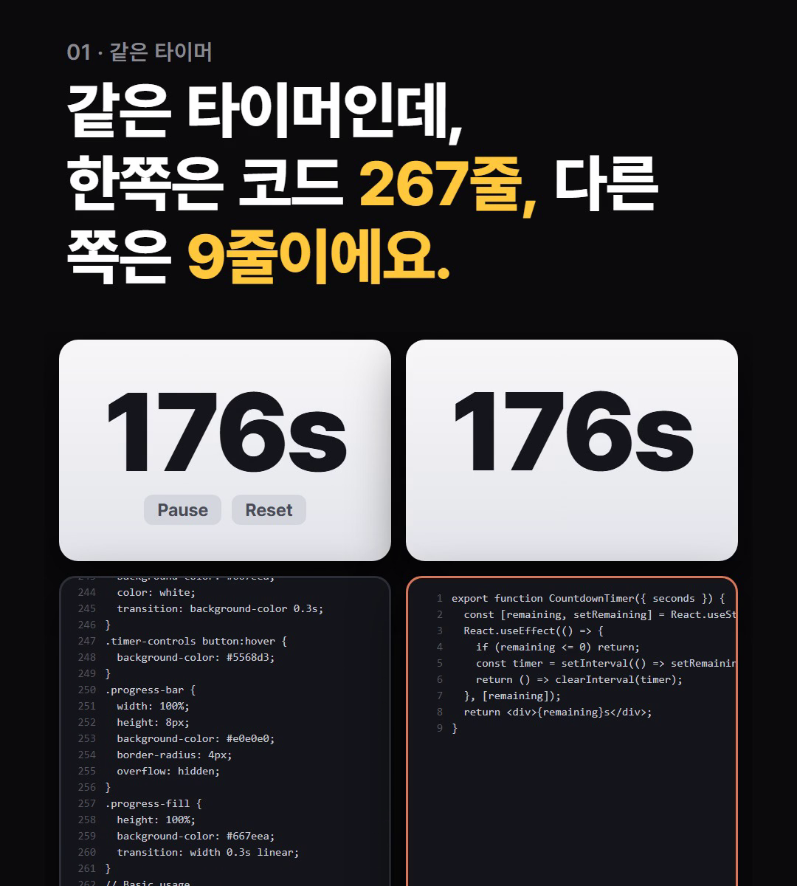
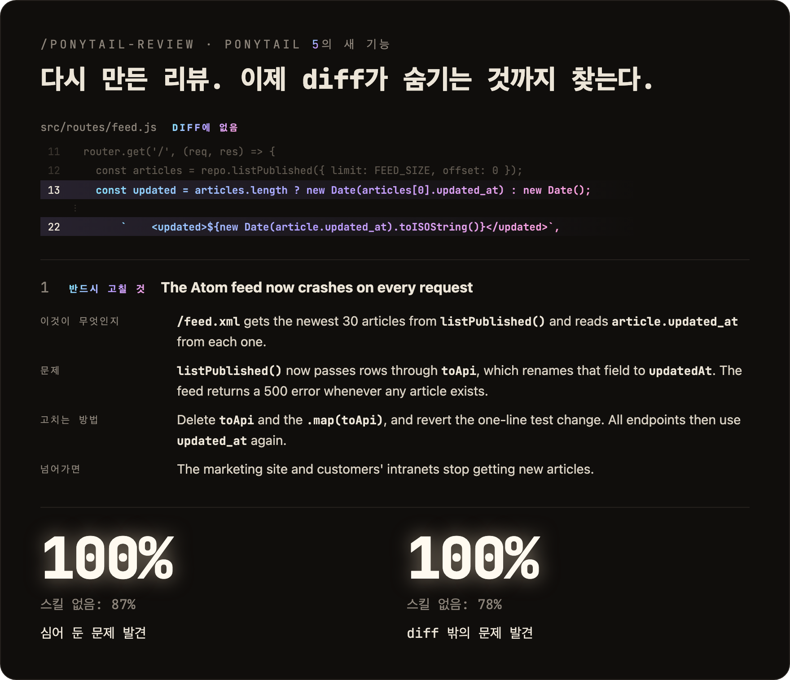
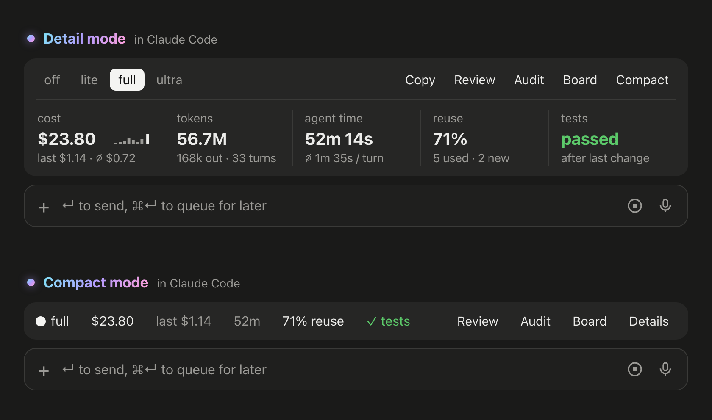

Ponytail은 클로드 코드에 붙이는 무료 스킬(MIT)이에요. 코드를 쓰기 전에 '이게 꼭 필요한지, 이미 있는 걸로 되는지'를 순서대로 따지고, 안 될 때만 최소한으로 새로 짜요. 입력 검증·보안·접근성은 자르지 않는다고 적혀 있어요. 이 정리본은 공식 설치 문서(README, 11/8 확인) 기준이에요. 저희가 직접 돌린 화면은 없고, 그림은 공식 README 그림과 공식 예제 코드를 옮긴 그림이에요.
Claude Code 입력칸에 아래 '복사해서 쓰기'의 설치 1(/plugin marketplace add DietrichGebert/ponytail)을 넣고 엔터, 끝나면 설치 2(/plugin install ponytail@ponytail)를 넣고 엔터. 두 줄을 한 번에 붙이지 마세요. 공식 저장소(GitHub DietrichGebert/ponytail, npm @dietrichgebert/ponytail)에서만 받으세요. .exe·.dll이 든 사본은 가짜라고 만든 사람이 적어 뒀어요.

설치하면 모든 세션에서 켜져 있어요. /ponytail 만 치면 지금 세기를 알려 줘요. 세기는 /ponytail lite · full · ultra, 끄려면 /ponytail off. 처음엔 기본값으로 두고 써 보세요.
코드를 쓰기 전에 아래 순서에서 '되는 첫 칸'에서 멈춰요: 1 꼭 있어야 하나 → 2 이미 이 프로젝트에 있나 → 3 표준 라이브러리 → 4 브라우저·플랫폼 기본 기능 → 5 이미 설치된 패키지 → 6 한 줄로 되나 → 7 그다음에야 최소한의 코드(로직이 있으면 작은 테스트 하나). 문제를 먼저 읽고 나서 이 순서를 돈다고 적혀 있어요.

'초를 받아 거꾸로 세는 React 타이머 만들어 줘'를 같은 모델에 시킨 공식 예제예요. 스킬 없이는 기본형에 일시정지·형식·스타일 버전까지 267줄, Ponytail은 남은 초를 보여 주는 9줄. 9줄 쪽은 '일시정지·mm:ss 표시·소리·꾸미기는 필요할 때 추가'라고 빼먹은 걸 밝혀요.

바꾼 코드뿐 아니라 그 코드가 닿는 파일까지 읽고 버그·보안·빠진 테스트·느린 곳·지울 것을 짚어 줘요. 지적마다 무엇이 문제인지, 고치는 법, 안 고치면 생기는 일을 적어요. 프로젝트 전체는 /ponytail-audit(고칠 순서까지).

Claude Code 2.1.290 이상(터미널·데스크톱 앱)에선 입력칸 위에 지금 작업 비용·토큰·시간·재사용 비율이 뜨는 띠가 나와요. 숨기려면 /ponytail band. VS Code 채팅 패널·claude -p에선 안 보여요.

Claude Code 입력칸에 먼저
/plugin marketplace add DietrichGebert/ponytail
1번 다음 따로
/plugin install ponytail@ponytail
기능 하나 다 만든 뒤
/ponytail-review
프로젝트를 처음 넘겨받았을 때
/ponytail-audit
길게 다 짜 달라고 할 때
/ponytail off
도움이 되셨다면
@ai.antenna.kr
에서 바로 쓰는 AI 활용법을 계속 올립니다.